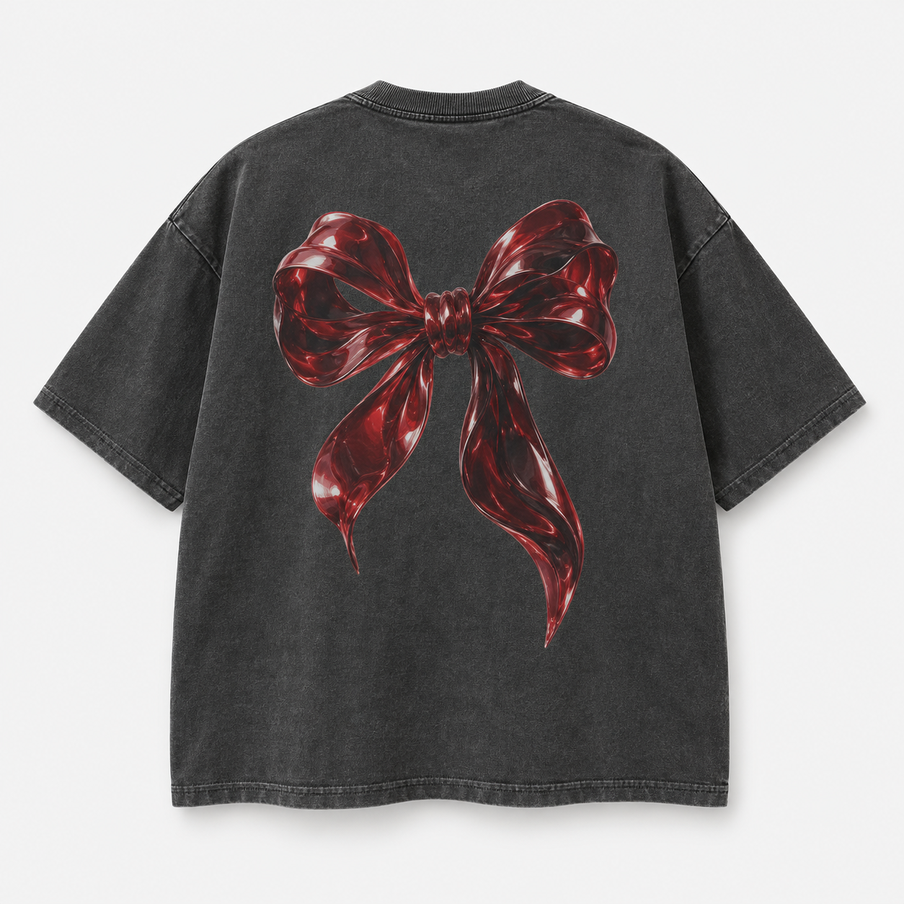
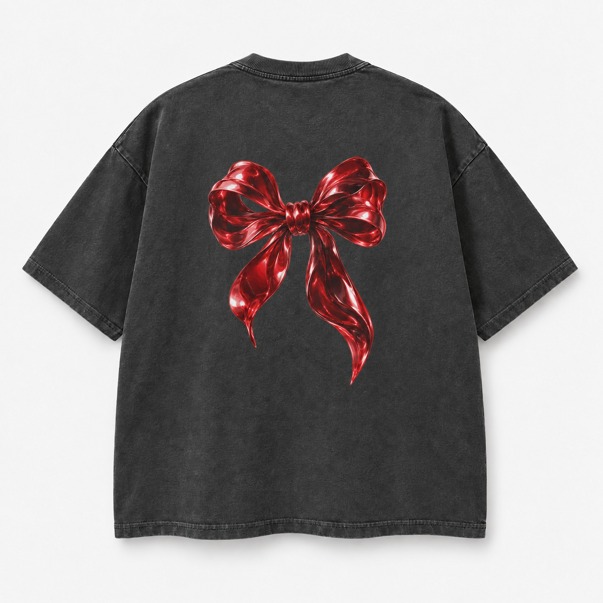

Plus de lumière.
Plus d’espace.
Le même ruban, avec des tons rouges plus lisibles sur le charbon et une taille moins envahissante. Aucune nouvelle marque ni slogan ajouté.


PAS ENCORE UN PRODUIT FABRIQUÉ
Le dessin avance.
Le fichier reste à finir.
La V2 est intégrée à la galerie. L’original est conservé. Le volume du tee et son délavage sont encore des simulations ; ils ne garantissent pas ceux du support livré.
Contrôle refusé pour l’impression : les essais d’illustrations isolées du ruban et du cheval contiennent un damier dessiné, sans canal transparent. Ils ne sont pas proposés au téléchargement comme fichiers de production.
Les PNG obtenus font 1254 × 1254 pixels. À 30 cm, cela représente au maximum environ 106 ppp avant même de retirer les marges. Pour 30 cm à 150 ppp, il faut au moins 1772 pixels utiles. Aucun agrandissement artificiel n’a été présenté comme un original haute résolution.
Le guide Printful demande de vérifier résolution, transparence et règles propres au support. Ce contrôle général ne valide ni ton compte fournisseur, ni le produit précis.
Tee, hoodie, manches longues, pantalon, casquette, cagoule et boucles d’oreilles restent dans le périmètre. Cette révision ne remplace pas la collection complète et ne prouve pas des ventes futures. Aucune publication ou commande.